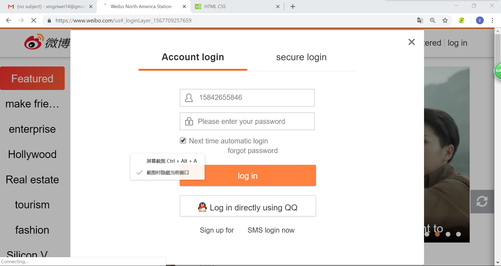
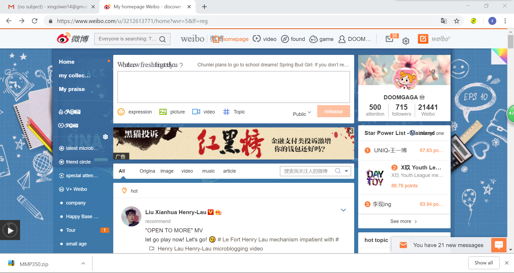
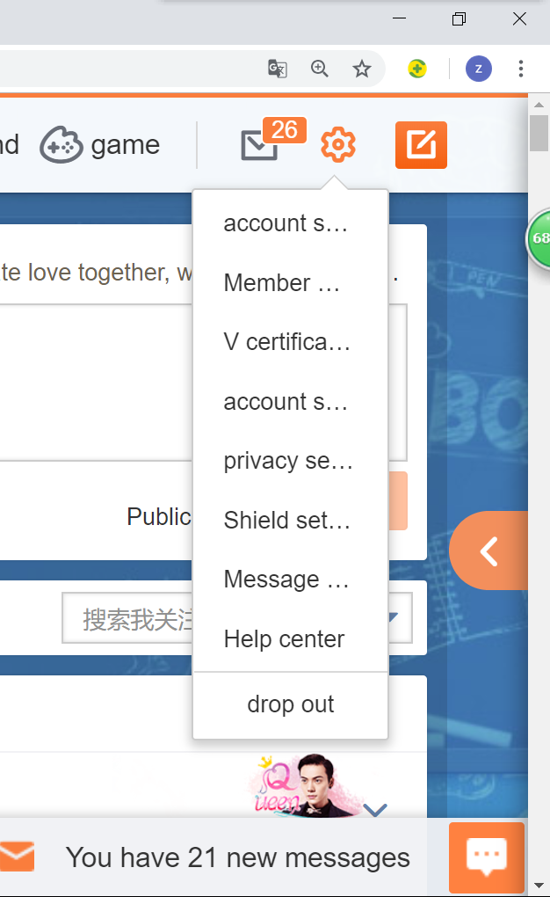
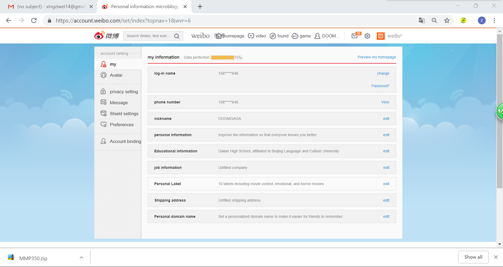

Website breakdown
by Ziwei Xing
This is the Weibo Log In page.
After log in. I taken to the Weibo Home Page. In homeage, you can search anything you like and follow them. There are some nice picture and vedio.
In the setting, I can create my profolio and add information on it.
In my portfolio, I add my information on it.

These are the people who I connect with, I interested in and following. Sometimes I comment their post and like it.